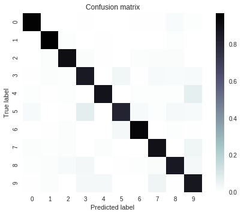

使用神经网络对手写数字进行分类

- 训练线性模型和神经网络，以对传统 MNIST 数据集中的手写数字进行分类
- 比较线性分类模型和神经网络分类模型的效果
可视化神经网络隐藏层的权重
我们的目标是将每个输入图片与正确的数字相对应。我们会创建一个包含几个隐藏层的神经网络，并在顶部放置一个归一化指数层，以选出最合适的类别。
设置
首先，我们下载数据集、导入 TensorFlow 和其他实用工具，并将数据加载到 Pandas DataFrame。请注意，此数据是原始 MNIST 训练数据的样本；我们随机选择了 20000 行。
1 | from __future__ import print_function |
| 0 | 1 | 2 | 3 | 4 | 5 | 6 | 7 | 8 | 9 | ... | 775 | 776 | 777 | 778 | 779 | 780 | 781 | 782 | 783 | 784 | |
|---|---|---|---|---|---|---|---|---|---|---|---|---|---|---|---|---|---|---|---|---|---|
| 5456 | 8 | 0 | 0 | 0 | 0 | 0 | 0 | 0 | 0 | 0 | ... | 0 | 0 | 0 | 0 | 0 | 0 | 0 | 0 | 0 | 0 |
| 934 | 0 | 0 | 0 | 0 | 0 | 0 | 0 | 0 | 0 | 0 | ... | 0 | 0 | 0 | 0 | 0 | 0 | 0 | 0 | 0 | 0 |
| 2662 | 8 | 0 | 0 | 0 | 0 | 0 | 0 | 0 | 0 | 0 | ... | 0 | 0 | 0 | 0 | 0 | 0 | 0 | 0 | 0 | 0 |
| 9385 | 4 | 0 | 0 | 0 | 0 | 0 | 0 | 0 | 0 | 0 | ... | 0 | 0 | 0 | 0 | 0 | 0 | 0 | 0 | 0 | 0 |
| 157 | 8 | 0 | 0 | 0 | 0 | 0 | 0 | 0 | 0 | 0 | ... | 0 | 0 | 0 | 0 | 0 | 0 | 0 | 0 | 0 | 0 |
5 rows × 785 columns
第一列中包含类别标签。其余列中包含特征值，每个像素对应一个特征值，有 28×28=784 个像素值，其中大部分像素值都为零；您也许需要花一分钟时间来确认它们不全部为零。

这些样本都是分辨率相对较低、对比度相对较高的手写数字图片。0-9 这十个数字中的每个可能出现的数字均由唯一的类别标签表示。因此，这是一个具有 10 个类别的多类别分类问题。
现在，我们解析一下标签和特征，并查看几个样本。注意 loc 的使用，借助 loc，我们能够基于原来的位置抽出各列，因为此数据集中没有标题行。
1 | def parse_labels_and_features(dataset): |
1 | training_targets, training_examples = parse_labels_and_features(mnist_dataframe[:7500]) |
| 1 | 2 | 3 | 4 | 5 | 6 | 7 | 8 | 9 | 10 | ... | 775 | 776 | 777 | 778 | 779 | 780 | 781 | 782 | 783 | 784 | |
|---|---|---|---|---|---|---|---|---|---|---|---|---|---|---|---|---|---|---|---|---|---|
| count | 7500.0 | 7500.0 | 7500.0 | 7500.0 | 7500.0 | 7500.0 | 7500.0 | 7500.0 | 7500.0 | 7500.0 | ... | 7500.0 | 7500.0 | 7500.0 | 7500.0 | 7500.0 | 7500.0 | 7500.0 | 7500.0 | 7500.0 | 7500.0 |
| mean | 0.0 | 0.0 | 0.0 | 0.0 | 0.0 | 0.0 | 0.0 | 0.0 | 0.0 | 0.0 | ... | 0.0 | 0.0 | 0.0 | 0.0 | 0.0 | 0.0 | 0.0 | 0.0 | 0.0 | 0.0 |
| std | 0.0 | 0.0 | 0.0 | 0.0 | 0.0 | 0.0 | 0.0 | 0.0 | 0.0 | 0.0 | ... | 0.0 | 0.0 | 0.0 | 0.0 | 0.0 | 0.0 | 0.0 | 0.0 | 0.0 | 0.0 |
| min | 0.0 | 0.0 | 0.0 | 0.0 | 0.0 | 0.0 | 0.0 | 0.0 | 0.0 | 0.0 | ... | 0.0 | 0.0 | 0.0 | 0.0 | 0.0 | 0.0 | 0.0 | 0.0 | 0.0 | 0.0 |
| 25% | 0.0 | 0.0 | 0.0 | 0.0 | 0.0 | 0.0 | 0.0 | 0.0 | 0.0 | 0.0 | ... | 0.0 | 0.0 | 0.0 | 0.0 | 0.0 | 0.0 | 0.0 | 0.0 | 0.0 | 0.0 |
| 50% | 0.0 | 0.0 | 0.0 | 0.0 | 0.0 | 0.0 | 0.0 | 0.0 | 0.0 | 0.0 | ... | 0.0 | 0.0 | 0.0 | 0.0 | 0.0 | 0.0 | 0.0 | 0.0 | 0.0 | 0.0 |
| 75% | 0.0 | 0.0 | 0.0 | 0.0 | 0.0 | 0.0 | 0.0 | 0.0 | 0.0 | 0.0 | ... | 0.0 | 0.0 | 0.0 | 0.0 | 0.0 | 0.0 | 0.0 | 0.0 | 0.0 | 0.0 |
| max | 0.0 | 0.0 | 0.0 | 0.0 | 0.0 | 0.0 | 0.0 | 0.0 | 0.0 | 0.0 | ... | 1.0 | 1.0 | 0.8 | 0.2 | 1.0 | 0.2 | 0.0 | 0.0 | 0.0 | 0.0 |
8 rows × 784 columns
1 | validation_targets, validation_examples = parse_labels_and_features(mnist_dataframe[7500:10000]) |
| 1 | 2 | 3 | 4 | 5 | 6 | 7 | 8 | 9 | 10 | ... | 775 | 776 | 777 | 778 | 779 | 780 | 781 | 782 | 783 | 784 | |
|---|---|---|---|---|---|---|---|---|---|---|---|---|---|---|---|---|---|---|---|---|---|
| count | 2500.0 | 2500.0 | 2500.0 | 2500.0 | 2500.0 | 2500.0 | 2500.0 | 2500.0 | 2500.0 | 2500.0 | ... | 2500.0 | 2500.0 | 2500.0 | 2500.0 | 2500.0 | 2500.0 | 2500.0 | 2500.0 | 2500.0 | 2500.0 |
| mean | 0.0 | 0.0 | 0.0 | 0.0 | 0.0 | 0.0 | 0.0 | 0.0 | 0.0 | 0.0 | ... | 0.0 | 0.0 | 0.0 | 0.0 | 0.0 | 0.0 | 0.0 | 0.0 | 0.0 | 0.0 |
| std | 0.0 | 0.0 | 0.0 | 0.0 | 0.0 | 0.0 | 0.0 | 0.0 | 0.0 | 0.0 | ... | 0.0 | 0.0 | 0.0 | 0.0 | 0.0 | 0.0 | 0.0 | 0.0 | 0.0 | 0.0 |
| min | 0.0 | 0.0 | 0.0 | 0.0 | 0.0 | 0.0 | 0.0 | 0.0 | 0.0 | 0.0 | ... | 0.0 | 0.0 | 0.0 | 0.0 | 0.0 | 0.0 | 0.0 | 0.0 | 0.0 | 0.0 |
| 25% | 0.0 | 0.0 | 0.0 | 0.0 | 0.0 | 0.0 | 0.0 | 0.0 | 0.0 | 0.0 | ... | 0.0 | 0.0 | 0.0 | 0.0 | 0.0 | 0.0 | 0.0 | 0.0 | 0.0 | 0.0 |
| 50% | 0.0 | 0.0 | 0.0 | 0.0 | 0.0 | 0.0 | 0.0 | 0.0 | 0.0 | 0.0 | ... | 0.0 | 0.0 | 0.0 | 0.0 | 0.0 | 0.0 | 0.0 | 0.0 | 0.0 | 0.0 |
| 75% | 0.0 | 0.0 | 0.0 | 0.0 | 0.0 | 0.0 | 0.0 | 0.0 | 0.0 | 0.0 | ... | 0.0 | 0.0 | 0.0 | 0.0 | 0.0 | 0.0 | 0.0 | 0.0 | 0.0 | 0.0 |
| max | 0.0 | 0.0 | 0.0 | 0.0 | 0.0 | 0.0 | 0.0 | 0.0 | 0.0 | 0.0 | ... | 1.0 | 0.8 | 0.0 | 0.0 | 0.0 | 0.0 | 0.0 | 0.0 | 0.0 | 0.0 |
8 rows × 784 columns
显示一个随机样本及其对应的标签。
1 | rand_example = np.random.choice(training_examples.index) |
为 MNIST 构建线性模型
首先，我们创建一个基准模型，作为比较对象。LinearClassifier 可提供一组 k 类一对多分类器，每个类别（共 k 个）对应一个分类器。
您会发现，除了报告准确率和绘制对数损失函数随时间变化情况的曲线图之外，我们还展示了一个混淆矩阵。混淆矩阵会显示错误分类为其他类别的类别。哪些数字相互之间容易混淆？
另请注意，我们会使用 log_loss 函数跟踪模型的错误。不应将此函数与用于训练的 LinearClassifier 内部损失函数相混淆。
1 | def construct_feature_columns(): |
在本次练习中，我们会对训练和预测使用单独的输入函数，并将这些函数分别嵌套在 create_training_input_fn() 和 create_predict_input_fn() 中，这样一来，我们就可以调用这些函数，以返回相应的 _input_fn，并将其传递到 .train() 和 .predict() 调用。
1 | def create_training_input_fn(features, labels, batch_size, num_epochs=None, shuffle=True): |
1 | def create_predict_input_fn(features, labels, batch_size): |
1 | def train_linear_classification_model( |
1 | _ = train_linear_classification_model( |
Training model...
LogLoss error (on validation data):
period 00 : 4.39
period 01 : 4.01
period 02 : 3.77
period 03 : 3.84
period 04 : 3.70
period 05 : 3.59
period 06 : 3.65
period 07 : 3.54
period 08 : 3.50
period 09 : 3.55
Model training finished.
Final accuracy (on validation data): 0.90

使用神经网络替换线性分类器
使用 DNNClassifier 替换上面的 LinearClassifier，并查找可实现 0.95 或更高准确率的参数组合。
您可能希望尝试 Dropout 等其他正则化方法。这些额外的正则化方法已记录在 DNNClassifier 类的注释中。
除了神经网络专用配置（例如隐藏单元的超参数）之外，以下代码与原始的 LinearClassifer 训练代码几乎完全相同。
1 | def train_nn_classification_model( |
1 | classifier = train_nn_classification_model( |
Training model...
LogLoss error (on validation data):
period 00 : 4.01
period 01 : 3.45
period 02 : 3.01
period 03 : 3.19
period 04 : 2.62
period 05 : 2.29
period 06 : 2.17
period 07 : 2.11
period 08 : 2.06
period 09 : 2.00
Model training finished.
Final accuracy (on validation data): 0.94
接下来，我们来验证测试集的准确率。
1 | mnist_test_dataframe = pd.read_csv( |
| 1 | 2 | 3 | 4 | 5 | 6 | 7 | 8 | 9 | 10 | ... | 775 | 776 | 777 | 778 | 779 | 780 | 781 | 782 | 783 | 784 | |
|---|---|---|---|---|---|---|---|---|---|---|---|---|---|---|---|---|---|---|---|---|---|
| count | 10000.0 | 10000.0 | 10000.0 | 10000.0 | 10000.0 | 10000.0 | 10000.0 | 10000.0 | 10000.0 | 10000.0 | ... | 10000.0 | 10000.0 | 10000.0 | 10000.0 | 10000.0 | 10000.0 | 10000.0 | 10000.0 | 10000.0 | 10000.0 |
| mean | 0.0 | 0.0 | 0.0 | 0.0 | 0.0 | 0.0 | 0.0 | 0.0 | 0.0 | 0.0 | ... | 0.0 | 0.0 | 0.0 | 0.0 | 0.0 | 0.0 | 0.0 | 0.0 | 0.0 | 0.0 |
| std | 0.0 | 0.0 | 0.0 | 0.0 | 0.0 | 0.0 | 0.0 | 0.0 | 0.0 | 0.0 | ... | 0.0 | 0.0 | 0.0 | 0.0 | 0.0 | 0.0 | 0.0 | 0.0 | 0.0 | 0.0 |
| min | 0.0 | 0.0 | 0.0 | 0.0 | 0.0 | 0.0 | 0.0 | 0.0 | 0.0 | 0.0 | ... | 0.0 | 0.0 | 0.0 | 0.0 | 0.0 | 0.0 | 0.0 | 0.0 | 0.0 | 0.0 |
| 25% | 0.0 | 0.0 | 0.0 | 0.0 | 0.0 | 0.0 | 0.0 | 0.0 | 0.0 | 0.0 | ... | 0.0 | 0.0 | 0.0 | 0.0 | 0.0 | 0.0 | 0.0 | 0.0 | 0.0 | 0.0 |
| 50% | 0.0 | 0.0 | 0.0 | 0.0 | 0.0 | 0.0 | 0.0 | 0.0 | 0.0 | 0.0 | ... | 0.0 | 0.0 | 0.0 | 0.0 | 0.0 | 0.0 | 0.0 | 0.0 | 0.0 | 0.0 |
| 75% | 0.0 | 0.0 | 0.0 | 0.0 | 0.0 | 0.0 | 0.0 | 0.0 | 0.0 | 0.0 | ... | 0.0 | 0.0 | 0.0 | 0.0 | 0.0 | 0.0 | 0.0 | 0.0 | 0.0 | 0.0 |
| max | 0.0 | 0.0 | 0.0 | 0.0 | 0.0 | 0.0 | 0.0 | 0.0 | 0.0 | 0.0 | ... | 1.0 | 1.0 | 0.6 | 0.0 | 0.0 | 0.0 | 0.0 | 0.0 | 0.0 | 0.0 |
8 rows × 784 columns
1 | predict_test_input_fn = create_predict_input_fn( |
Accuracy on test data: 0.95
可视化第一个隐藏层的权重。
我们来花几分钟时间看看模型的 weights_ 属性，以深入探索我们的神经网络，并了解它学到了哪些规律。
模型的输入层有 784 个权重，对应于 28×28 像素输入图片。第一个隐藏层将有 784×N 个权重，其中 N 指的是该层中的节点数。我们可以将这些权重重新变回 28×28 像素的图片，具体方法是将 N 个 1×784 权重数组变形为 N 个 28×28 大小数组。
运行以下单元格，绘制权重曲线图。请注意，此单元格要求名为 “classifier” 的 DNNClassifier 已经过训练。
1 | print(classifier.get_variable_names()) |
['dnn/hiddenlayer_0/bias', 'dnn/hiddenlayer_0/bias/t_0/Adagrad', 'dnn/hiddenlayer_0/kernel', 'dnn/hiddenlayer_0/kernel/t_0/Adagrad', 'dnn/hiddenlayer_1/bias', 'dnn/hiddenlayer_1/bias/t_0/Adagrad', 'dnn/hiddenlayer_1/kernel', 'dnn/hiddenlayer_1/kernel/t_0/Adagrad', 'dnn/logits/bias', 'dnn/logits/bias/t_0/Adagrad', 'dnn/logits/kernel', 'dnn/logits/kernel/t_0/Adagrad', 'global_step']
weights0 shape: (784, 100)
神经网络的第一个隐藏层应该会对一些级别特别低的特征进行建模，因此可视化权重可能只显示一些模糊的区域，也可能只显示数字的某几个部分。此外，您可能还会看到一些基本上是噪点（这些噪点要么不收敛，要么被更高的层忽略）的神经元。
在迭代不同的次数后停止训练并查看效果，可能会发现有趣的结果。
分别用 10、100 和 1000 步训练分类器。然后重新运行此可视化。
您看到不同级别的收敛之间有哪些直观上的差异？
1 | classifier = train_nn_classification_model( |
Training model...
LogLoss error (on validation data):
period 00 : 29.18
period 01 : 28.72
period 02 : 21.72
period 03 : 27.76
period 04 : 21.00
period 05 : 22.31
period 06 : 17.28
period 07 : 15.51
period 08 : 20.03
period 09 : 13.90
Model training finished.
Final accuracy (on validation data): 0.60
1 | print(classifier.get_variable_names()) |
['dnn/hiddenlayer_0/bias', 'dnn/hiddenlayer_0/bias/t_0/Adagrad', 'dnn/hiddenlayer_0/kernel', 'dnn/hiddenlayer_0/kernel/t_0/Adagrad', 'dnn/hiddenlayer_1/bias', 'dnn/hiddenlayer_1/bias/t_0/Adagrad', 'dnn/hiddenlayer_1/kernel', 'dnn/hiddenlayer_1/kernel/t_0/Adagrad', 'dnn/logits/bias', 'dnn/logits/bias/t_0/Adagrad', 'dnn/logits/kernel', 'dnn/logits/kernel/t_0/Adagrad', 'global_step']
weights0 shape: (784, 100)
1 | classifier = train_nn_classification_model( |
Training model...
LogLoss error (on validation data):
period 00 : 18.72
period 01 : 10.71
period 02 : 7.58
period 03 : 8.70
period 04 : 5.79
period 05 : 5.21
period 06 : 5.40
period 07 : 6.05
period 08 : 5.75
period 09 : 3.95
Model training finished.
Final accuracy (on validation data): 0.89
1 | print(classifier.get_variable_names()) |
['dnn/hiddenlayer_0/bias', 'dnn/hiddenlayer_0/bias/t_0/Adagrad', 'dnn/hiddenlayer_0/kernel', 'dnn/hiddenlayer_0/kernel/t_0/Adagrad', 'dnn/hiddenlayer_1/bias', 'dnn/hiddenlayer_1/bias/t_0/Adagrad', 'dnn/hiddenlayer_1/kernel', 'dnn/hiddenlayer_1/kernel/t_0/Adagrad', 'dnn/logits/bias', 'dnn/logits/bias/t_0/Adagrad', 'dnn/logits/kernel', 'dnn/logits/kernel/t_0/Adagrad', 'global_step']
weights0 shape: (784, 100)